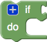
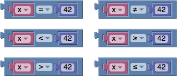

Logic Conditionals and Comparisons
Conditional statements are central to computer programming. They make it possible to express statements like:
- If there is a path to the left, turn left.
- If score = 100, print "Well done!".
See additional information about conditional statements.
If blocks
The simplest conditional statement is an if block, as shown:
When run, this will compare the value of the variable x to 100. If it is larger, "What a big number!" will be printed. Otherwise, nothing happens.

If-Else blocks
It is also possible to specify that something should happen if the condition is not true, as shown in this example:
As with the previous block, "What a big number!" will be printed if x > 100; otherwise, "That's not very big." will be printed.
An if block may have zero or one else sections but not more than one.

If-Else-If blocks
It is also possible to test multiple conditions with a single if block by adding else if clauses:
The block first checks if x > 100, printing "What a big number!" if it is. If it is not, it goes on to check if x = 42. If so, it prints "That's my lucky number." Otherwise, nothing happens.
An if block may have any number of else if sections. Conditions are evaluated top to bottom until one is satisfied, or until no more conditions are left.

If-Else-If-Else blocks
As shown here, if blocks may have both else if and else sections:
The else section guarantees that some action is performed, even if none of the prior conditions are true.
An else section may occur after any number of else if sections, including zero.

Block Modification
Only the plain if block appears in the toolbox:

To add else if and else clauses, the user needs to click on the gear icon, which opens a new window:
The user can then drag else if and else clauses into the if block, as well as reordering and removing them. When finished, the user should click on the minus sign, which closes the window, as shown here:
Note that the shapes of the blocks allows any number of else if subblocks to be added but only up to one else block.
Boolean
Boolean algebra is a mathematical system that has two values:
- true
- false
Boolean values (also called conditions) are used in these control block, which contain examples:
One of the many examples from those pages is:
If the value of the variable x is greater than 100, the condition is true, and the text "What a big number!" is printed. If the value of x is not greater than 100, the condition is false, and "That's not very big." is printed.
Boolean values can also be stored in variables and passed to procedures, the same as number, text, and list values.
If a block expects a Boolean value as an input, it usually interprets an absent input as false. An example is provided below. Non-Boolean values cannot be directly plugged in where Boolean values are expected, although it is possible (but inadvisable) to store a non-Boolean value in a variable, then plug that into the input. Neither of these practices are recommended, and their behaviour could change in future versions of Blockly.
Values
A single block, with a dropdown specifying either true or false, can be used to get a boolean value:
Comparisons
There are six comparison operators. Each takes two inputs (normally numbers) and returns true or false depending on how the inputs compare with each other.

The six operators are: equals, not equals, less than, less than or equal, greater than, greater than or equal.
Logical Operations
The and block will return true only if both of its two inputs are also true.
The or block will return true if either of its two inputs are true.


Not
The not block converts its Boolean input into its opposite. For example, the result of:
is false.
As mentioned above, if no input is provided, a value of true is assumed, so the following block produces the value false:
Leaving an input empty is not recommended, however.

Questions?
Contact Boxlight Robotics at support@BoxlightRobotics.com with a detailed description of the steps you have taken and observations you have made.
Email Subject: Blockly Logic